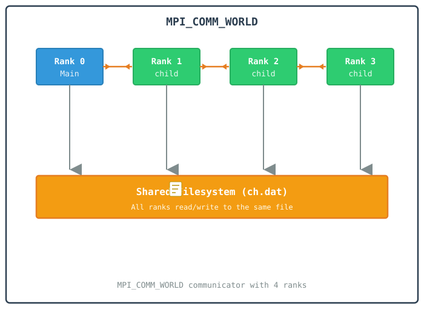
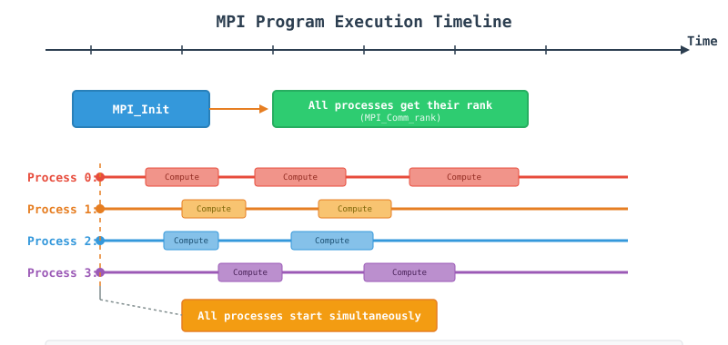
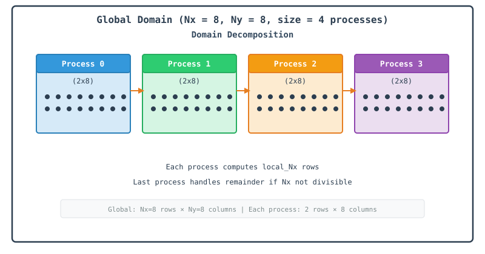
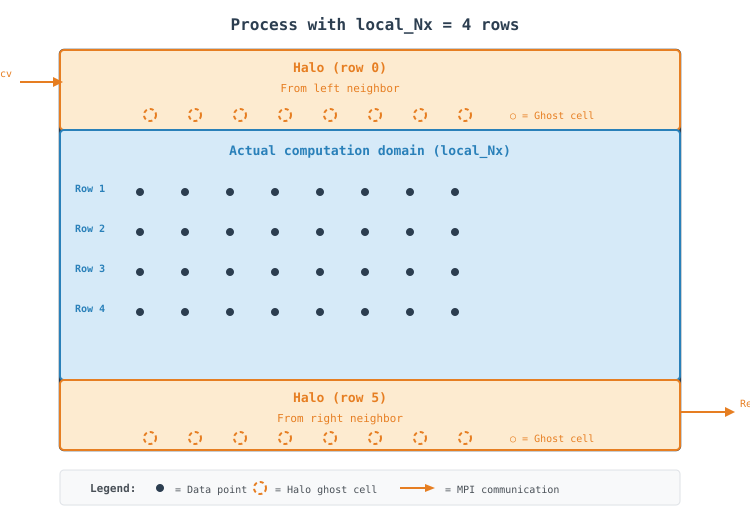
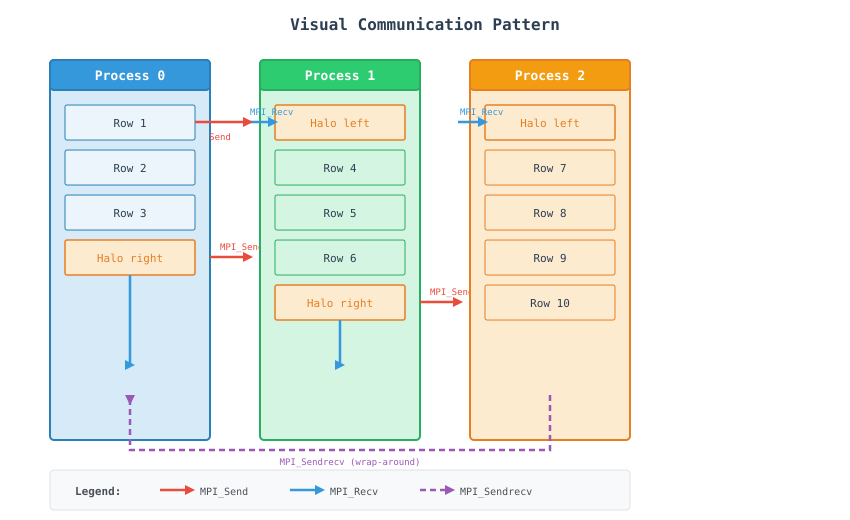
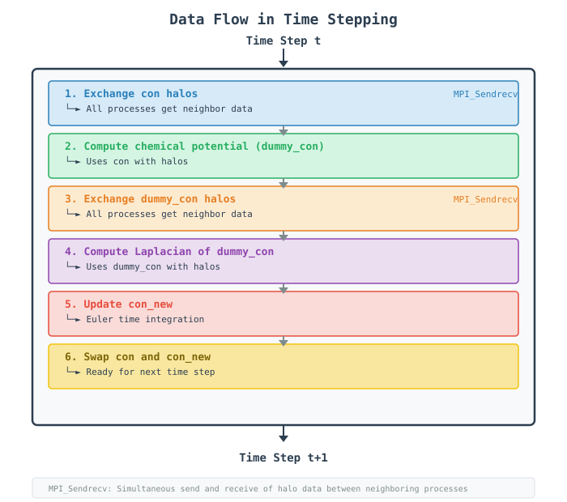
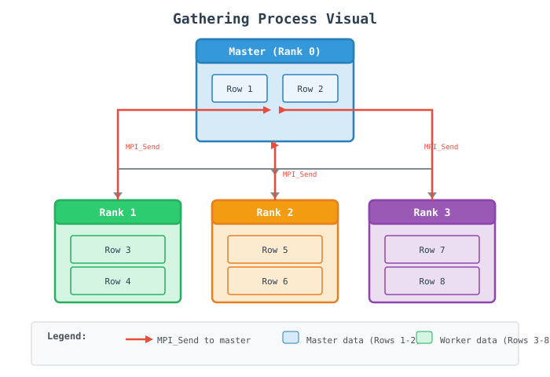
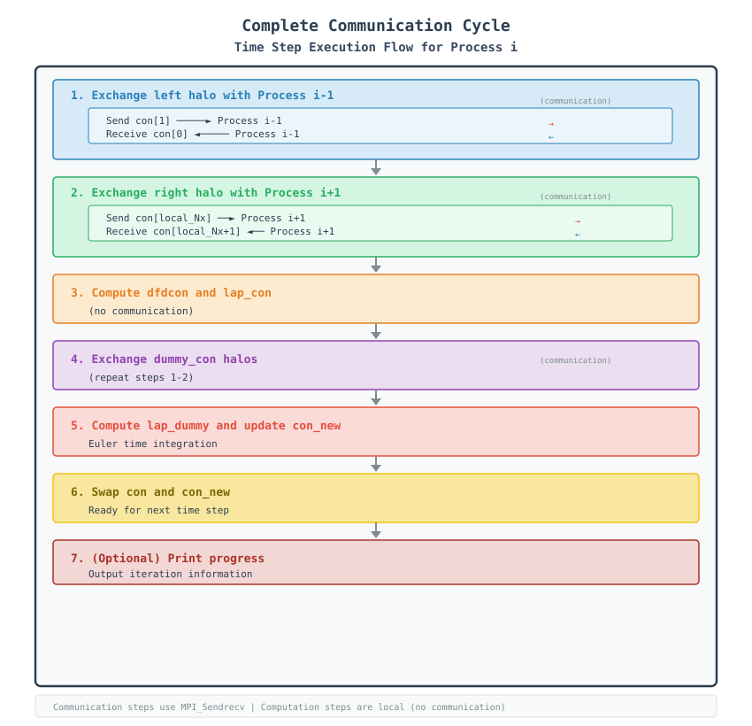
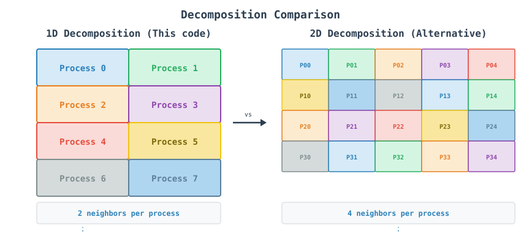
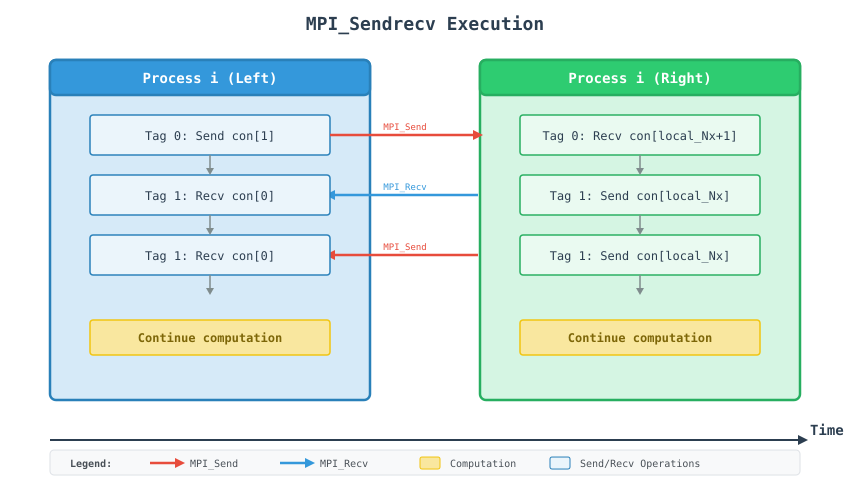

MPI Finite Difference Phase Field Code - A Tutorial Guide
Table of Contents
Introduction
This document provides a comprehensive tutorial on parallel computing using MPI (Message Passing Interface) through a finite difference code that solves the Cahn-Hilliard equation—a fundamental model for phase separation in materials science. The code uses Eigen::Array for vectorized row access, float precision, and a load-balanced domain decomposition so the work divides evenly even when the grid size isn’t a multiple of the number of processes.
What You Will Learn
How to initialize and manage MPI processes
Load-balanced domain decomposition strategies for scientific computing
Communication patterns for finite difference stencils using Eigen row buffers
Data management with halo/ghost cells on
Eigen::ArraymatricesPerformance optimization techniques (precomputed neighbor indices,
-O3 -march=native,floatprecision)
Understanding the Physics
The Cahn-Hilliard equation describes phase separation in binary alloys:
where:
\(c\): Concentration field
\(M\): Mobility
\(F\): Free energy functional
The code uses a 5-point finite difference stencil to discretize this equation spatially:
Why Parallelize?
The 2D domain is \(5000 \times 5000\) grid points — 25 million points evolved for 1000 time steps.
Serial: 25 million points \(\times\) 1000 time steps = too slow on a single core.
Parallel: Domain divided among processors along the x-direction, each handling \(\sim 1/N\) of the rows, with remainder rows spread across the first few ranks so no process is left idle while others do extra work.
MPI Concepts for Beginners
What is MPI?
MPI is a standardized message-passing library designed for parallel computing. Think of it as a way for different computers (or processors) to talk to each other.
Key Concepts
Concept |
Analogy |
In Our Code |
|---|---|---|
Rank |
Worker ID number |
Process identifier (0 to |
Communicator |
Group of workers |
|
Send/Recv |
Passing notes |
Exchanging boundary rows via |
|
An empty mailbox |
Used for the first/last rank’s missing neighbor, so no |
Process Communication Model

Step-by-Step Code Walkthrough
Step 1: MPI Initialization
MPI_Init(&argc, &argv);
int rank, size;
MPI_Comm_rank(MPI_COMM_WORLD, &rank);
MPI_Comm_size(MPI_COMM_WORLD, &size);
if (rank == 0) {
std::cout << "Total processors running: " << size << std::endl;
std::cout << "Grid size: " << Nx << " x " << Ny << std::endl;
std::cout << "Using float precision" << std::endl;
}
What happens here?
MPI_Init: Starts the MPI environment, sets up communication channels.MPI_Comm_rank: Each process gets a unique ID (0 tosize - 1).MPI_Comm_size: Total number of processes running.Only rank 0 prints the run configuration, so you don’t get the same three lines repeated once per process.
Visual Timeline:

Step 2: Load-Balanced Domain Decomposition
int base_Nx = Nx / size;
int remainder = Nx % size;
int local_Nx = base_Nx + (rank < remainder ? 1 : 0);
int start_x = rank * base_Nx + std::min(rank, remainder);
int end_x = start_x + local_Nx;
int local_Nx_halo = local_Nx + 2;
What happens here?
base_Nx: the guaranteed minimum number of rows every rank owns.remainder: how many ranks need one extra row to cover the full domain.local_Nx: ranks0throughremainder - 1get one extra row so the domain divides evenly overall.start_x: computed withstd::min(rank, remainder)so ranks after the firstremainderones are offset correctly once the extra rows run out.local_Nx_halo = local_Nx + 2: two extra rows reserved for halo cells.
Visual Representation:

Step 3: Eigen-Based Halo Allocation
using EigenMatrix = Eigen::Array<float, Eigen::Dynamic, Eigen::Dynamic, Eigen::RowMajor>;
EigenMatrix con = EigenMatrix::Zero(local_Nx_halo, Ny);
EigenMatrix dfdcon = EigenMatrix::Zero(local_Nx_halo, Ny);
EigenMatrix lap_con = EigenMatrix::Zero(local_Nx_halo, Ny);
EigenMatrix dummy_con = EigenMatrix::Zero(local_Nx_halo, Ny);
EigenMatrix con_new = EigenMatrix::Zero(local_Nx_halo, Ny);
What happens here?
Eigen::Array<float, Dynamic, Dynamic, RowMajor>stores each row contiguously in memory, so a whole row can be sent with a single pointer and length inMPI_Sendrecvinstead of looping element by element.RowMajoris explicit here: Eigen defaults to column-major, which would makefield.row(i).data()not point at contiguous memory.EigenMatrix::Zero(...)allocates and zero-initializes in one call.floatprecision keeps each array’s memory footprint and the bytes sent per halo exchange smaller — at \(5000 \times 5000\), each array is 100 MB.
Halo Cells Visual:

Why are halos needed?
To compute derivatives at domain boundaries, we need values from adjacent rows.
Rank 1 needs a boundary row from rank 0 (left) and rank 2 (right).
Halos act as buffers that temporarily store these “ghost” values after communication.
Step 4: Data Initialization
std::mt19937 rng(rank + 12345);
std::uniform_real_distribution<float> dist(0.0f, 1.0f);
for (int i = 1; i <= local_Nx; ++i) {
for (int j = 0; j < Ny; ++j) {
con(i, j) = con_0 + noise * (0.5f - dist(rng));
}
}
apply_periodic_y(con, local_Nx);
Important Points:
Each process initializes its own unique memory slice, using
(row, col)Eigen accessors.rank + 12345ensures a unique random seed per process, preventing duplicate noise generation.apply_periodic_yrefreshes the y-boundary ghost columns right after initialization, since Eigen arrays have no built-in wraparound indexing.
Step 5: Communication - Halo Exchange as a Reusable Function
inline void exchange_x_halos(EigenMatrix& field, int local_Nx, int left, int right,
MPI_Comm comm, MPI_Status& status) {
// Send row 1 to left neighbor, receive into row local_Nx + 1 from right
MPI_Sendrecv(field.row(1).data(), Ny, MPI_FLOAT, left, 0,
field.row(local_Nx + 1).data(), Ny, MPI_FLOAT, right, 0,
comm, &status);
// Send row local_Nx to right neighbor, receive into row 0 from left
MPI_Sendrecv(field.row(local_Nx).data(), Ny, MPI_FLOAT, right, 1,
field.row(0).data(), Ny, MPI_FLOAT, left, 1,
comm, &status);
}
What happens here?
field.row(1).data(): Eigen exposes a raw pointer into the row’s contiguous memory, soMPI_Sendrecvcan be called exactly as it would be on a plain C array.MPI_FLOATmatches thefloatprecision ofEigenMatrix.left/rightuseMPI_PROC_NULLfor the domain’s outer edges, so this function needs no special-casing for rank 0 or the last rank.This function is reused for both
conanddummy_con, since the stencil computation is split into two passes with a halo exchange between them.
Visual Communication Pattern:

Step 6: Computation - Two Passes
Pass 1 — chemical potential:
inline void compute_laplacian_and_chemical_potential(
const EigenMatrix& con, EigenMatrix& dfdcon, EigenMatrix& lap_con,
EigenMatrix& dummy_con, int local_Nx,
float dx, float dy, float A, float grad_coef)
{
const float inv_dxdy = 1.0f / (dx * dy);
static std::vector<int> jp(Ny), jm(Ny);
static bool initialized = false;
if (!initialized) {
for (int j = 0; j < Ny; ++j) {
jp[j] = (j + 1) % Ny;
jm[j] = (j - 1 + Ny) % Ny;
}
initialized = true;
}
for (int i = 1; i <= local_Nx; ++i) {
const auto& con_i = con.row(i);
const auto& con_ip1 = con.row(i + 1);
const auto& con_im1 = con.row(i - 1);
auto dfdcon_i = dfdcon.row(i);
auto lap_con_i = lap_con.row(i);
auto dummy_con_i = dummy_con.row(i);
for (int j = 0; j < Ny; ++j) {
const float c = con_i(j);
dfdcon_i(j) = A * (2.0f * c * (1.0f - c) * (1.0f - 2.0f * c));
lap_con_i(j) = (con_ip1(j) + con_im1(j) +
con_i(jp[j]) + con_i(jm[j]) -
4.0f * c) * inv_dxdy;
dummy_con_i(j) = dfdcon_i(j) - grad_coef * lap_con_i(j);
}
}
}
Pass 2 — second Laplacian and time integration:
inline void update_field(
const EigenMatrix& con, const EigenMatrix& dummy_con, EigenMatrix& con_new,
int local_Nx, float dt, float mobility, float inv_dxdy)
{
static std::vector<int> jp(Ny), jm(Ny);
// ... same precomputed neighbor tables ...
const float factor = dt * mobility * inv_dxdy;
for (int i = 1; i <= local_Nx; ++i) {
const auto& con_i = con.row(i);
const auto& dummy_i = dummy_con.row(i);
const auto& dummy_ip1 = dummy_con.row(i + 1);
const auto& dummy_im1 = dummy_con.row(i - 1);
auto con_new_i = con_new.row(i);
for (int j = 0; j < Ny; ++j) {
const float lap_dummy = (dummy_ip1(j) + dummy_im1(j) +
dummy_i(jp[j]) + dummy_i(jm[j]) -
4.0f * dummy_i(j));
float c_new = con_i(j) + factor * lap_dummy;
con_new_i(j) = std::max(CLAMP_LOW, std::min(c_new, CLAMP_HIGH));
}
}
}
What happens here?
jp[j]/jm[j]: precomputed once via a function-localstaticarray instead of recomputed with%on every inner-loop iteration.con.row(i),con.row(i+1), etc. return Eigen expressions bound toconst auto&, avoiding row copies while keeping the inner loop readable.Pass 1 computes
dfdcon,lap_con, and the chemical potentialdummy_con.Pass 2 computes
lap_dummyfromdummy_con’s neighbors and advances the concentration field with a clamped forward-Euler step:std::max(CLAMP_LOW, std::min(c_new, CLAMP_HIGH)).dummy_conneeds its own halo exchange (Step 7) before Pass 2 can read its neighboring rows correctly.
Step 7: The Evolution Loop
int left = (rank == 0) ? MPI_PROC_NULL : rank - 1;
int right = (rank == size - 1) ? MPI_PROC_NULL : rank + 1;
for (int tsteps = 1; tsteps <= nsteps; ++tsteps) {
exchange_x_halos(con, local_Nx, left, right, MPI_COMM_WORLD, status);
compute_laplacian_and_chemical_potential(
con, dfdcon, lap_con, dummy_con, local_Nx, dx, dy, A, grad_coef);
exchange_x_halos(dummy_con, local_Nx, left, right, MPI_COMM_WORLD, status);
update_field(con, dummy_con, con_new, local_Nx, dt, mobility, inv_dxdy);
std::swap(con, con_new);
apply_periodic_y(con, local_Nx);
if (tsteps % nprint == 0 && rank == 0) {
std::cout << "Done steps = " << tsteps << std::endl;
}
}
What happens here?
MPI_PROC_NULLmakesMPI_Sendrecvtreat the missing side as a no-op automatically, soexchange_x_halosneeds noif (rank != 0)guard.Each time step performs two halo exchanges: one for
conbefore Pass 1, and one fordummy_conbefore Pass 2.std::swap(con, con_new)is an O(1) pointer/metadata swap, no data copy.apply_periodic_y(con, local_Nx)refreshes the ghost columns atj = 0andj = Ny - 1every step, right after the swap.
Data Flow in Time Stepping:

Step 8: Final Output
if (rank == 0) {
std::cout << " Total Run Time = " << (mpi_end_time - mpi_start_time) << " seconds." << std::endl;
int rows_to_print = std::min(5, local_Nx);
for (int i = 1; i <= rows_to_print; ++i) {
for (int j = 0; j < 5; ++j) {
std::cout << std::setw(10) << con(i, j) << " ";
}
std::cout << "\n";
}
int output_size = std::min(100, local_Nx);
std::ofstream outfile("ch_small.dat");
for (int i = 1; i <= output_size; ++i) {
for (int j = 0; j < std::min(100, Ny); ++j) {
outfile << con(i, j) << (j < 99 ? " " : "");
}
outfile << "\n";
}
}
What happens here?
Only rank 0 prints and writes output — no gather step, so no communication happens in this stage.
rows_to_print: at most 5 rows, printed to the console for a quick sanity check.output_size: up to a100 x 100corner of rank 0’s localconarray, written toch_small.dat.All of the values printed and written here come from rank 0’s own local slice of the domain.
Gathering Process Visual:

Step 9: Timing and Performance Measurement
float mpi_start_time = MPI_Wtime();
// ... computation ...
float mpi_end_time = MPI_Wtime();
std::cout << " Total Run Time = " << (mpi_end_time - mpi_start_time) << " seconds." << std::endl;
Wall-clock vs MPI Time:
Wall-clock time: Overall execution time including MPI overhead
MPI time: Time spent in MPI operations (communication overhead)
Total Time = Computation Time + Communication Time + Idle Time
Visualization of Complete Communication Cycle

Why 1D Decomposition?
Advantages
Simple to implement with clear top/bottom boundary targets.
Only two active neighbors to manage (left and right).
Low code complexity for structured meshing.
Load-balanced across ranks (Step 2).
Disadvantages
Poor scalability ceiling if using thousands of ranks.
Network layout bottlenecks when partitioning data along only one direction.

Communication Patterns Explained
MPI_Sendrecv: The Superhero of MPI
Why use MPI_Sendrecv instead of separate Send and Recv?
Problem with separate Send/Recv:
// DANGER: Potential Deadlock!
MPI_Send(field.row(1).data(), Ny, MPI_FLOAT, left, 0, MPI_COMM_WORLD);
MPI_Recv(field.row(local_Nx+1).data(), Ny, MPI_FLOAT, right, 0, MPI_COMM_WORLD, &status);
If both processes send first, both will wait forever (deadlock).
Solution with MPI_Sendrecv:
// SAFE: Combined send and receive handled safely by runtime engine
MPI_Sendrecv(field.row(1).data(), Ny, MPI_FLOAT, left, 0,
field.row(local_Nx+1).data(), Ny, MPI_FLOAT, right, 0,
MPI_COMM_WORLD, &status);
MPI handles the synchronization internally, preventing deadlocks. MPI_PROC_NULL means neither left nor right ever need to be checked before the call, since MPI silently skips the send or receive side when the partner is MPI_PROC_NULL.
Communication Timeline
MPI_Sendrecv Execution:

Blocking vs Non-blocking Communication
Aspect |
Blocking (This code) |
Non-blocking (Alternative) |
|---|---|---|
Function |
|
|
Behavior |
Waits for completion |
Returns immediately |
Overlap |
No computation during communication |
Can compute while communicating |
Complexity |
Simple |
Requires |
Performance |
Lower for large messages |
Higher potential performance |
Non-blocking would look like:
MPI_Request req[4];
MPI_Isend(field.row(1).data(), Ny, MPI_FLOAT, left, 0, MPI_COMM_WORLD, &req[0]);
MPI_Irecv(field.row(local_Nx + 1).data(), Ny, MPI_FLOAT, right, 0, MPI_COMM_WORLD, &req[1]);
// Compute here while communication happens!
MPI_Waitall(2, req, MPI_STATUSES_IGNORE);
Running the Code
Compilation
Linux (GCC/OpenMPI, with Eigen headers on the include path):
mpic++ main.cpp -O3 -march=native -std=c++20 -I /usr/include/eigen3/ -o main
Windows (Intel MPI):
mpiicpx -I"C:\libs\eigen-5.0.0" main.cpp
Eigen is a header-only library, so -I points at the headers and nothing needs to be linked. -march=native lets the compiler auto-vectorize the float stencil loops for the specific CPU it’s built on.
Running
Basic Run (4 processes):
mpirun -np 4 ./main
Scale -np based on available cores and memory — each rank needs local_Nx_halo x Ny x 4 bytes x 5 arrays of memory.
Common Pitfalls and Solutions
1. Column-Major Eigen Arrays
Problem:
// Wrong: default Eigen storage order is ColMajor
using EigenMatrix = Eigen::Array<float, Eigen::Dynamic, Eigen::Dynamic>;
// field.row(i).data() no longer points at contiguous row memory!
Solution:
// Correct: explicit RowMajor storage
using EigenMatrix = Eigen::Array<float, Eigen::Dynamic, Eigen::Dynamic, Eigen::RowMajor>;
field.row(i).data() must point to Ny contiguous floats for MPI_Sendrecv to work correctly.
2. Forgetting the Second Halo Exchange
Problem:
exchange_x_halos(con, local_Nx, left, right, MPI_COMM_WORLD, status);
compute_laplacian_and_chemical_potential(con, dfdcon, lap_con, dummy_con, ...);
// Missing: exchange_x_halos(dummy_con, ...)
update_field(con, dummy_con, con_new, ...); // reads stale dummy_con halos!
Solution: Exchange dummy_con’s halos between the two computation passes, as shown in Step 7.
3. Forgetting apply_periodic_y After the Swap
Problem:
std::swap(con, con_new);
// Missing: apply_periodic_y(con, local_Nx);
// Next iteration's stencil reads stale y-boundary values from before the swap
Solution: Call apply_periodic_y(con, local_Nx) immediately after every swap, as shown in Step 7.
4. Mismatched MPI Datatype
Problem:
MPI_Sendrecv(field.row(1).data(), Ny, MPI_DOUBLE, left, 0, ...); // Wrong! Array is float
Solution:
MPI_Sendrecv(field.row(1).data(), Ny, MPI_FLOAT, left, 0, ...); // Matches EigenMatrix's float
5. Assuming Rank 0’s Output Is the Full Domain
Problem: Treating ch_small.dat as a full-field snapshot, when it only contains rank 0’s local corner.
Solution: Add a gather step (see Advanced Topics) if the complete 5000 x 5000 field is needed.
Advanced Topics
Full-Domain Gather
To collect the complete field on rank 0 (e.g. for plotting):
if (rank == 0) {
EigenMatrix full_con = EigenMatrix::Zero(Nx, Ny);
full_con.block(start_x, 0, local_Nx, Ny) = con.block(1, 0, local_Nx, Ny);
for (int p = 1; p < size; ++p) {
int p_local_Nx = base_Nx + (p < remainder ? 1 : 0);
int p_start_x = p * base_Nx + std::min(p, remainder);
std::vector<float> recv_buf(p_local_Nx * Ny);
MPI_Recv(recv_buf.data(), p_local_Nx * Ny, MPI_FLOAT, p, 0,
MPI_COMM_WORLD, MPI_STATUS_IGNORE);
// Copy recv_buf into full_con.block(p_start_x, 0, p_local_Nx, Ny)
}
} else {
MPI_Send(con.data() + Ny, local_Nx * Ny, MPI_FLOAT, 0, 0, MPI_COMM_WORLD);
}
Each rank’s row count and starting offset are recomputed with base_Nx / remainder, since the decomposition is load-balanced rather than uniform.
Non-blocking Halo Exchange
Convert exchange_x_halos to MPI_Isend/MPI_Irecv so the CPU can start compute_laplacian_and_chemical_potential on interior rows while boundary rows are still in flight.
MPI + OpenMP Hybrid
Combine with OpenMP to parallelize the inner j loops of compute_laplacian_and_chemical_potential and update_field within each rank:
#pragma omp parallel for
for (int i = 1; i <= local_Nx; ++i) {
// existing row-wise computation
}
Precision Trade-offs
float halves memory and communication volume relative to double, at the cost of reduced precision — worth profiling both for simulations sensitive to numerical drift over long runs.
Appendix: Quick Reference
Key Constants
Constant |
Value |
|---|---|
|
5000, 5000 |
|
1000 |
|
0.01f |
Precision |
|
|
|
MPI Functions Used
Function |
Purpose |
|---|---|
|
Start/stop the MPI environment |
|
Identify this process / count all processes |
|
Combined, deadlock-safe send + receive |
|
“No-op” neighbor for domain edges |
|
High-resolution wall-clock timer |
Eigen Types Used
Type |
Purpose |
|---|---|
|
The |
|
Allocate + zero-initialize |
|
Row accessor, |
|
Sub-block view/assignment, useful for gather-style code |